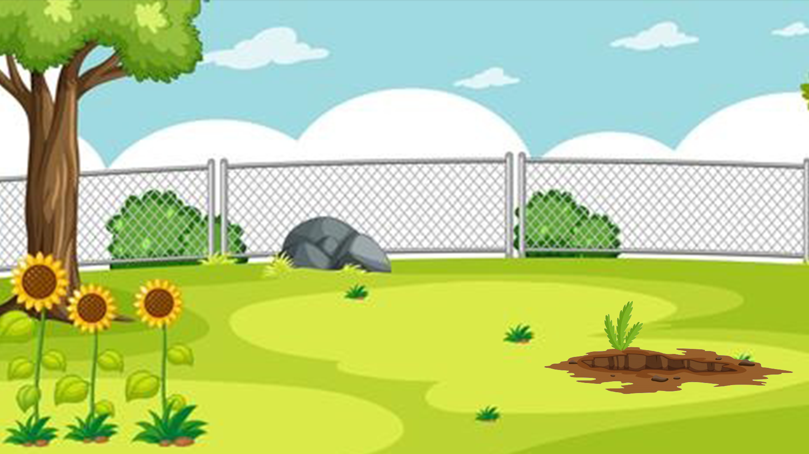

After we heard Rose and Elles conversation we investigated rose's garden and their seems to be a rough patch, as if the ground was delved into recently
That means we gotta investigate that suspicious part first.
But
for that we need a tool! Find the tool which resembles a spade with a broad blade